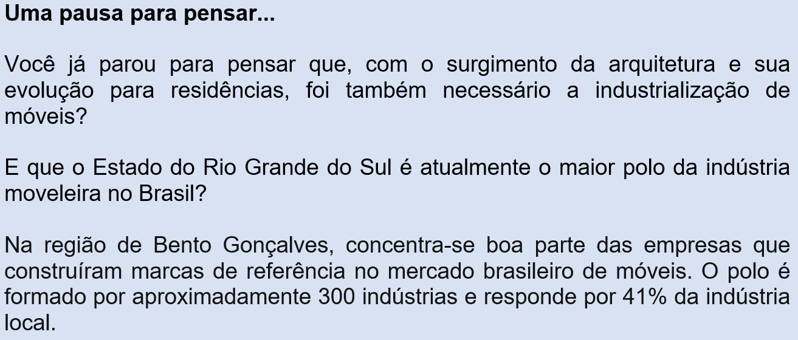

Capítulo 2: A contribuição da indústria da contrução civil para o enriquecimento do patrimônio histórico de uma cidade
Questão-problema:
Você conhece algum prédio muito antigo da sua cidade?
Há alguma casa ou prédio que você conheça ou em que você tenha auxiliado na construção/restauração que se destaca pela beleza ou pelo uso de algum material diferente ou pela aplicação de alguma técnica inovadora?
Contextualizando
Convidamos você a conhecer aqui, a Fundação Iberê Camargo, um museu, situado na orla do Guaíba, no bairro Cristal, em Porto Alegre.
(Fonte: http://iberecamargo.org.br/a-fundacao/#a-arquitetura)
Essa obra foi projetada pelo arquiteto português Álvaro Siza. Entre as novidades técnicas da edificação, destaca-se o uso de forma significativa do concreto branco, pela primeira vez no Brasil. Esse tipo de estrutura é confeccionada com cimento branco, agregados claros e armação galvanizada (para evitar a oxidação). Além do impacto plástico, o material oferece alta durabilidade e baixa manutenção. Desenvolvido pela construtora Camargo Corrêa em parceria com a Universidade Federal do Rio Grande do Sul, foi um dos vencedores do 3º Prêmio de Tecnologia e Construtividade, criado pela UN Infra-estrutura. “O museu não tem pilares nem vigas, sua ossatura é monolítica, sem junta de dilatação”, diz o calculista Nunes da Silva. É como “um barco, não tem fundação profunda: é um prédio pesado, que fica sobre a brita”, relata José Luiz Canal (o engenheiro responsável). Tudo o que se vê por fora é estrutura. Com isso, à sua maneira, Siza incorporou ao desenho do museu um dos principais itens do discurso arquitetônico brasileiro: a explicitação da gênese estrutural. Mas não é só pela referência a ícones da arquitetura brasileira, pela materialidade ou pela ênfase estrutural que o projeto se avizinha dos trópicos: há também a questão da escala. Acostumada com o monumentalismo dos prédios clássicos do modernismo nacional, a maior parte dos projetistas brasileiros que têm a oportunidade de conhecer de perto as obras lusitanas de Siza volta com a mesma sensação: o desencanto com a escala diminuta.
Planta baixa
Álvaro Siza: Fundação Iberê Camargo, Porto Alegre, Rio Grande do Sul
FORTALEZA DE CONCRETO: TÉCNICA CONSTRUTIVA
Fonte:https://www.arcoweb.com.br/projetodesign/especiais/alvaro-siza-fundacao-ibere-camargo-parte-3-01-07-2008
Reconstruindo conhecimentos:
Assim como as diversas linguagens artísticas, a arquitetura também foi sendo aprimorada ao longo dos processos de evolução da humanidade. Durante muito tempo, a arquitetura também era ofício de um artista. Neste capítulo vamos estudar a história da arquitetura, seus períodos iniciais e principais características. Depois vamos tratar de alguns aspectos da arquitetura no Brasil, destacando alguns Patrimônios Materiais brasileiros.
História da Arquitetura
A história da arquitetura, como citado anteriormente, é uma subdivisão da história da Arte. Está diretamente relacionada com toda a evolução humana.
Podemos compreender que a arquitetura passou a existir desde o momento que o homem primitivo precisou buscar abrigo para se proteger de predadores bem como de fenômenos naturais.
Arquitetura da Pré-História
Especificamente no período Neolítico, quando a sobrevivência do homem primitivo chegou próximo de um cenário mais específico (algumas áreas próximas a grandes rios e
solos férteis) surgiu um novo cenário. Se antes eles se acomodavam em cavernas, neste momento a descoberta do fogo permitiu ao homem um controle gradativo da natureza.
Assim, inicia-se o processo de construção de moradias edificadas em pedras no formato de um cone incompleto sem nenhum tipo de material para revesti-las. Essas construções
receberam o nome de “Nuragues”
(Fonte: http://universocivil.blogspot.com/2015/12/construcoes-na-pre-historia_12.html
Arquitetura Antiga
A partir do quarto milênio a.C, os povos que habitavam regiões próximas ao Rio Nilo organizaram uma união política, o que possibilitou a origem da civilização egípcia.
Suas principais construções eram voltadas para seus deuses e túmulos para seus faraós. Nascem assim, as famosas pirâmides do Egito. Como a crença da época era de que
tudo deveria durar para sempre, foi necessário a busca por um material duradouro. Manteve-se como material principal a utilização de pedras, contando com a inovação
da utilização de encaixes de madeira, que permite empilhar as pedras sem necessidade de usar massa para prendê-las umas às outras.
(Fonte: https://antigoegito.org/arquitetura-egipcia/dsc03163_2048x1536/
Arquitetura Grega
Também conhecida como arquitetura clássica, o modo das construções gregas destaca-se na história pela busca máxima da perfeição. Apesar de manter uma forte ligação com a
religiosidade/mitologia, os gregos destacaram-se pelo grande valor dado à razão humana. Com isso, a utilização de cálculos matemáticos e geométricos, proporção e regras
foi a inovação na época. Destacam-se nas construções de templos e teatros, a monumentalidade, simetria e utilização de colunas e pórticos. A utilização de argila para a
fabricação de tijolos passou a ser necessária e a madeira passou a fazer parte da estrutura das coberturas.
(Fonte: https://www.vivadecora.com.br/pro/arquitetura/arquitetura-grega-antiga/
Para acompanhar de forma ilustrada a continuação da história da arquitetura e suas características, assista ao vídeo:

Arquitetura no Brasil e Patrimônios Históricos
Acompanhando a história do Brasil, a arquitetura naturalmente foi alvo da influência de diversos povos que aqui estavam ou chegaram.
A Igreja Católica, especialmente no período colonial, teve forte influência na arquitetura brasileira. O modelo das construções e cidades mais antigas têm origem no modelo típico das chamadas reduções jesuíticas. A construção principal passa a ser a casa dos padres ou capelas, que ficava à frente de uma praça e à volta eram construídas as primeiras casas. Se você observar, várias cidades brasileiras se desenvolveram a partir desse modelo. Existe uma igreja matriz ou principal, com uma praça à frente.
No Rio Grande do Sul, o principal patrimônio histórico que remonta à época colonial, é o Sítio Arqueológico de São Miguel do Arcanjo. Lá, encontra-se preservada boa parte da antiga igreja em ruína, as fundações das habitações indígenas e algumas bases das paredes de oficinas e outros edifícios.
(Fonte: https://www.saomiguel-rs.com.br/site/conteudos/2066-sitio-arqueologico-sao-miguel-arcanjo
Apesar da beleza das construções da arquitetura colonial brasileira, seus projetistas ficaram no anonimato. Artistas excepcionais como Aleijadinho ficaram conhecidos mais em função de suas estátuas e peças de madeira entalhadas, do que pelas igrejas que projetaram e construíram.
(Fonte: https://www.historiadomundo.com.br/idade-moderna/aleijadinho.htm
Quem foi Aleijadinho?
Além das Ruínas de São Miguel e as obras integradas de Aleijadinho, podemos citar outras construções da época do Brasil colônia que são reconhecidas hoje como como Patrimônios Históricos Brasileiros.
Mosteiro São Bento – Olinda (Fonte: https://arqbrasil10.wordpress.com/arquitetura-colonial/
Paróquia do Pilar Ouro Preto, MG (Fonte: https://www.ouropreto.com.br/secao/artigo/paroquia-do-pilar-ouro-preto-mg
Nos séculos XIX e XX a arquitetura brasileira passou por um significativo desenvolvimento, tendo alguns arquitetos como Lúcio Costa e Oscar Niemeyer alcançado o reconhecimento da alta qualidade, beleza e funcionalidade de suas obras.
Clássicos da Arquitetura: Catedral de Brasília / Oscar Niemeyer (Fonte: http://www.archdaily.com.br/br/01-14553/classicos-da-arquitetura-catedral-de-brasilia-oscar-niemeyer
Em Porto Alegre, em homenagem à contribuição da cultura negra, há o projeto Percurso do Negro - instalações, esculturas, gravuras – que são admiradas pelos transeuntes para que nunca esqueçamos que uma cidade se constrói com a diversidade.
(Fonte: http://museudepercursodonegromportoalegre.blogspot.com/

(Fonte: http://museudepercursodonegromportoalegre.blogspot.com/
Praticando:
Vamos refletir um pouco sobre o que você aprendeu, respondendo as questões abaixo.
1) A fase da pré-história que remete às primeiras construções arquitetônicas é conhecida como:
a) ( ) paleolítico
b) ( ) idade do bronze
c) ( ) idade dos metais
d) ( ) classismo
e) ( ) neolítico
No período do paleolítico, o ser humano ainda habitava as cavernas. Classicismo é nome dado às características do período Grego.
2) A partir dos seus conhecimentos, elabore no espaço abaixo um pequeno desenho de como seria um templo da Grécia antiga.
O que aprendi:
Neste capítulo você foi convidado a conhecer os períodos iniciais da história da arquitetura, algumas relações atuais com a indústria e a reconhecer algumas edificações antigas que hoje fazem parte de nosso patrimônio histórico. Também refletiu sobre a evolução das construções de residências e inovações no setor da construção civil, que impulsionou também um crescimento na indústria de móveis, tornando o Estado do Rio Grande do Sul, um dos principais polos da produção brasileira.
O gráfico abaixo ilustra os números dos últimos anos em relação à produção de móveis no Rio Grande do Sul: